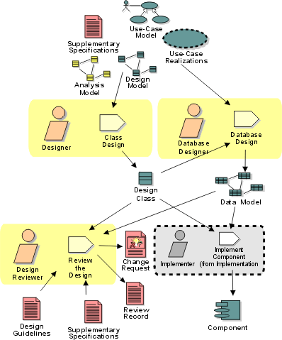

Disciplines >
Disciplines >
 Analysis & Design >
Analysis & Design >
 Workflow >
Design the Database
Workflow >
Design the Database
Disciplines >
Analysis & Design >
Workflow >
Design the Database
Workflow Detail:
|
Topics |
 |
The purpose of this workflow detail is to:
The Designers responsible for persistent classes need to have an understanding of the persistence in general and the persistence mechanisms in specific. Their primary responsibility is to ensure that persistent classes are identified and that these classes utilize the persistence mechanisms in an appropriate manner. The Database Designer needs to understand the persistent classes in the design model and so must have a working understanding of object-oriented design and implementation techniques. The Database Designer also needs a strong background in database concurrency and distribution issues.
Persistence must be treated as an integral part of the design effort, and
close collaboration between designers and database designers is essential.
Typically the database designer is a 'floating' resource, shared between several
teams as a consulting resource to address persistence issues. The database
designer is also typically responsible for the persistence mechanisms; if the
persistence mechanism is built rather than bought, there will typically be a
team of people working on this. Larger projects will typically require a small
team of database designers who will need to coordinate work between both design
teams and amongst themselves to ensure that persistence is consistently
implemented across the project.
|
Rational Unified
Process
|